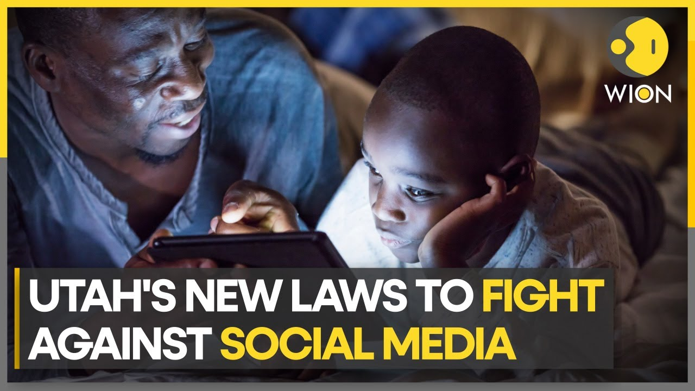
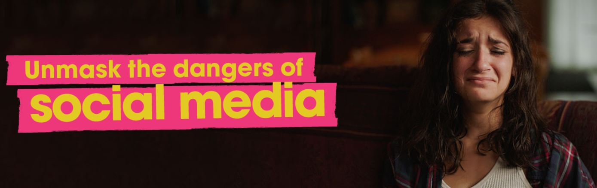
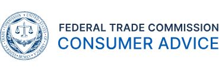

"Beware of the Sparkle: Social Media's Hidden Dangers"
Viphakone Monty
Professor Wyckhuyse
English 2010 Section 005
12/4/2023
"Beware of the Sparkle: Social Media's Hidden Dangers"
I am awakened on a hot summer’s day, “another year another heatwave” I thought to
myself. With the sweat beading down my brow, I turn my television on to be greeted by a
familiar broadcast as summers before. The local news station delivering another advisory with
the running headline “Beware of The Sparkle.” Motivated to escape the heat and unaware of the
vicious current and dormant debris below the inviting surface, another victim falls claim to the
sparkling calm exterior of the local Canal. I bring this up because I am reminded of this narrative
when I speak of an entity with similar workings.
“Social Media” works in a way as that of the canal from my childhood, calling in
possible victims with it alluring nature while hidden beneath lurks unseen dangers, acting as a
place where connections with friends and family are orchestrated. Although we cannot deny this
this tune, just like we cannot deny the winter’s snow melt made the canal cooling, our purpose
here is to serve as the running headline, “Beware of the Sparkle,” did from my childhood; calling
for users to use caution and bringing awareness to the potential dangers social media may
present.
Drawing again from my childhood I recall the D.A.R.E. program in elementary school
which warned us of the dangers of drugs. Although the effectiveness varied amongst our peers,
the awareness it provided, is what we aim to establish regarding social media. This is the type of
program we should be pushing for, but rather than focusing on Marijuana or cigarettes, we can
enter the social media discussion with the proposition that establishing such a program will bring
awareness concerning the following questions: is social media addiction forming? Does it
deteriorate mental health? Can it open gateways to cyber security threats? At the conclusion of
our conversation, the goal is to verify that indeed these are prevalent and life altering issues.
Only after confirmation, can we examine another question: with stakes so high as to be
considered as life altering, would it not be beneficial to establish an awareness program to
combat these issues? This is the proposition.
Our battle begins with the subtilty of the first underlining questions mentioned above. Is
social media addiction forming? Addiction is another beast of its own, one that evolves subtly
and rewards indulgence until the indulgence is accepted to be a part of one’s life. To Elaborate,
Daria J. Kuss, a researcher from The International Journal of Environmental Research and Public
Health, informs “There is a growing scientific evidence base to suggest excessive social
networking sites (SNSs) use may lead to symptoms traditionally associated with substance-
related addictions. These symptoms have been described as salience, mood modification,
tolerance, withdrawal, relapse, and conflict with regards to behavioral addictions, and have been
validated in the context of the Internet addiction components model,” (Kuss 6). In addition, an in
dept study held by D’Adrienzo a researcher and author from “The International Journal of
Mental Health and Addictions”. This study systematically reviewed the evidence concerning
internet/social media addiction and attachment styles. Drawing from her article D’Adrienzo
explains:
“There is a growing body of research that has examined the impact of
attachment styles and its influence on internet addiction (more generally) and
social media addiction (more specifically). Consequently, the present study
systematically reviewed the evidence concerning internet/social media addiction
and attachment style. A total of 32 papers published between 2000 and 2018 met
the inclusion criteria following searches in the following databases: Scopus, Web
of Science, PubMed, ProQuest, and Google Scholar. Findings demonstrated a
significant positive association between insecure attachment (anxious and
avoidant) and a more intensive and dysfunctional use of the internet and social
media. Findings demonstrate that those with insecure attachment appear to use the
social media sites as a way of replacing and compensating affection that is
missing from those around the individual (e.g., family and peers).” (D’Arienzo 1)
We can conclude from Kuss that social networking sites can indeed lead to addiction with
symptoms similar to substance abuse. In addition, D’Arienzo’s study reveals that
individuals with prior insecure attachment issues may look to social media to fill a void
consequentially forming a social media addiction.
On the contrary some parents may argue emphasizing the importance of teaching
responsible use rather than blaming platforms. A solid point that we can agree with, but
with the stake as high as addiction and mental health, can we rely on that alone? Not to
mention, it is usually easier said than done. For example, how many times have we read
headlines concerning suicide where parents give statements like: ‘we had no idea, they
seemed so happy,’ usually surprised and grasping at red flags to make sense of it all.
These are such stories touching on the subtlety of addiction and mental health effected by
excessive social media use, prompting us to remind users to “Beware of the Sparkle”.
Our argument isn’t that all individuals are susceptible, but rather, the
demographic in concern are usually teens, and according to Emily A. Vogels, who
received her PhD in experimental psychology from the University of New Brunswick,
“53% of teens who almost constantly use at least one of the many social media platforms
say they are on social media too much,” (Vogels 16). It is these 53% that maybe crying
out for such a program as the one we are aiming to establish. In addition, highlighted by
the findings of Jonathan Haidt, professor of Ethical Leadership of The New York
University, “when you compare rates in 2009 –before most teens were daily users of
social media––to 2019––the last full year before Covid made things even worse––the
increases are generally between 50% and 150%, depending on the disorder, gender, and
subgroup.” (Jonathan 3). Thus, indicating social media use is on the incline correlating
with trends of excessive use. A pressing topic, especially when considering the influence
social media can have on mental health. So much so, self-image and self-worth may be
reassessed leading to a downward spiral of negative thoughts.
Speaking of mental health, in the very beginning before anything problematic could be
realized, social media was the holy grail for connection allowing its users to express themselves
in a creative manner, share positive experiences, and build communities. Although this may hold
true, speaking as a Software Engineering major, time usually tells when concerning new
technology such as this. Furthermore, Stephanie S. Fredrick, researcher from the Journal of
Youth and Adolescence, informs “Further, prevalence of adolescent depression has increased
internationally in the past decade, corresponding with the surge in cell phone and social media
use” (Fredrick 2). To better understand how and why this is so, we dive into the findings of
Donald M. Hilty, an author affiliated with The Department of Psychiatry and Behavioral
Sciences, who conducted “A scoping review of 11 literature databases from 2000 to 2020
explored research studies in youth in five areas: clinical depression and anxiety, quantitative use,
social media mode, engagement and qualitative dimensions and health and well-being. Result
found out of 2,820 potential literature references, 140 met the inclusion criteria. The findings
conclude that depression may predict social media use and reduce perception of support,” (Hilty
1). In summary, Hilty’s coax the idea that social media can be sought out from preexisting
depression and social avoidance only to add on to the isolation thus continuing the cycle with
more social media use, a familiar trait of addiction.
Not only can mental health be at risk when consulting social media, but usually when
working with anything on the Web, cyber security threats become prevalent. In contrast, many
can argue that social media cyber security has implemented a range of security measures to
protect user data, and user should stay informed and utilize available safeguards. Nevertheless,
all the security features in the world could not prevent a scammer from utilizing misinformation
with malicious intent to gain information such as your address, email, and bank account
information. For instance, provided by Ahmed Alharibi, a student of the School of Computing
Technologies,
“a malicious account can pretend to be Alice who is Bob’s close friend. Alice
sends a friendship invitation to Bob. As a result, the malicious account will obtain
access to Bob’s private information that Bob intends to share only with the real
Alice. Furthermore, fake identities (profiles) tend to commit other malicious
behaviors. For instance, fake identities can attack the vulnerabilities of social
media, spread malware and manipulate legitimate users.” (Alharbi 2)
Drawing from my own personal experience we can see similarity to Alharibi’s example.
In my case, desperate for a job after applying for months on LinkedIn, I came across a
group page on Facebook entitled “Utah Jobs” exposing me to a scammer. Hanging to rainbows
and hope, I became the prime victims for cyber security threats in the form of a malicious
account. In short, a scammer posing as an employer spoon feed me misinformation to gain my
residence, email, and a photocopy of my identification card. Consequently, for weeks my email
was filled with verification codes from fake accounts that the scammer opened using my
information. Accounts such as: PayPal, Amazon, and even Acorn. Cyber security has become
such a pressing issue that the president of our university Astrid S. Tumiez delivered a warning on
the Utah Valley University homepage to student and faculty of the dangers. Similar to my case,
Tumiez advised “Impersonation scams are even more sinister. Scammers, pretending to be
someone you trust, may attempt to trick you into sending money, buying gift cards, or giving the
information needed to steal your identity. Always be cautious and verify before you act”
(Tumiez 00:45). Our president goes on to reveal the twist that her voice in the video was not her
own but actually an A.I. generated clone. She concluded “Just as my voice can be mimicked, so
can others. Always be vigilant. Cyber threats are real, but with awareness, we can protect
ourselves” (Tumiez 01:19).
In conclusion, in a world of diversity and demographics I cannot argue that social media
is all bad, there are obviously numerous benefits of social media, which is what makes it the
powerhouse that it is. Social Media can help connect loved ones and be an outlet for creative
thought, but on the other side of the coin, it can be the breeding grounds for depression, cyber
threats, and addiction. We have delivered our incites, research, thoughts, and claims, all to
combat issues that need a resolution. Therefore, I present to you a program for our students most
vulnerable. Although the tide may seem calm, underneath the surface there are teens wandering
in shadows. The program that I am arguing to establish will be a big banner at the shoreline that
simply states, “Social Media: beware of the Sparkle”.
Work Cited
Alharbi, Ahmed, et al. "Social Media Identity Deception Detection: A Survey." ACM
Computing Surveys, vol. 54, no. 3, April 2022, pp. 35. https://doi-
org.ezproxy.uvu.edu/10.1145/3446372
D’Arienzo, Maria Chiara, et al. “Addiction to Social Media and Attachment Styles: A Systematic
Literature Review - International Journal of Mental Health and Addiction.” SpringerLink,
Springer US, 18 Apr. 2019, link.springer.com/article/10.1007/s11469-019-00082-5.
Fredrick, Stephanie S., et al. “Adolescent Social Media Use: Pitfalls and Promises in Relation to
Cybervictimization, Friend Support, and Depressive Symptoms.” Journal of Youth &
Adolescence, vol. 51, no. 2, Feb. 2022, pp. 361–76. EBSCOhost, https://doi-
org.ezproxy.uvu.edu/10.1007/s10964-021-01561-6
Hilty, Donald M et al. “A scoping review of social media in child, adolescents and young adults:
research findings in depression, anxiety and other clinical challenges.” BJPsych open vol.
9,5 e152. 11 Aug. 2023, doi:10.1192/bjo.2023.523
Jonathan Haidt. "Teen Mental Health Is Plummeting, and Social Media is a Major Contributing
Cause: Testimony of Jonathan Haidt." Before the Senate Judiciary Committee,
Subcommittee on Technology, Privacy, and the Law, May 4, 2022.
Kuss, Daria, and Mark Griffiths. “Social Networking Sites and Addiction: Ten Lessons
Learned.” International Journal of Environmental Research and Public Health, vol. 14,
no. 3, Mar. 2017, p. 311. Crossref, https://doi.org/10.3390/ijerph14030311.
Tumiez, Astrid S. “Cybersecurity Awareness.” YouTube, Utah Valley University, 16 Oct. 2023,
https://www.youtube.com/watch?v=CVk-Hy03c5M.

Utah Fight Against Social Media

A Message from President Tuminez About Cybersecurity/h3>

Avoiding and Resport Scams